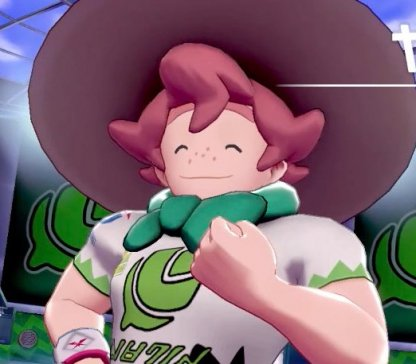
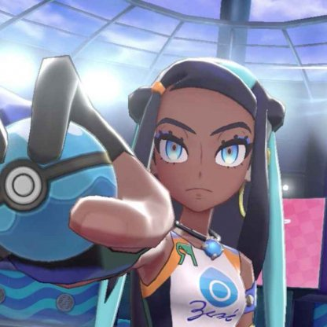
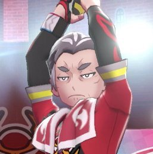
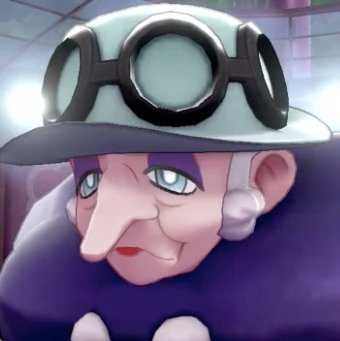
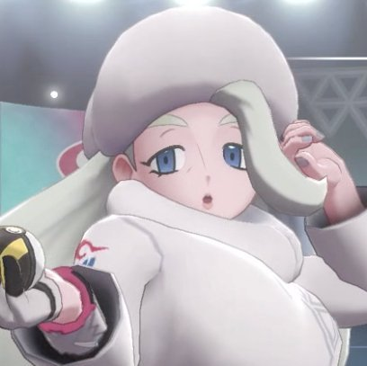
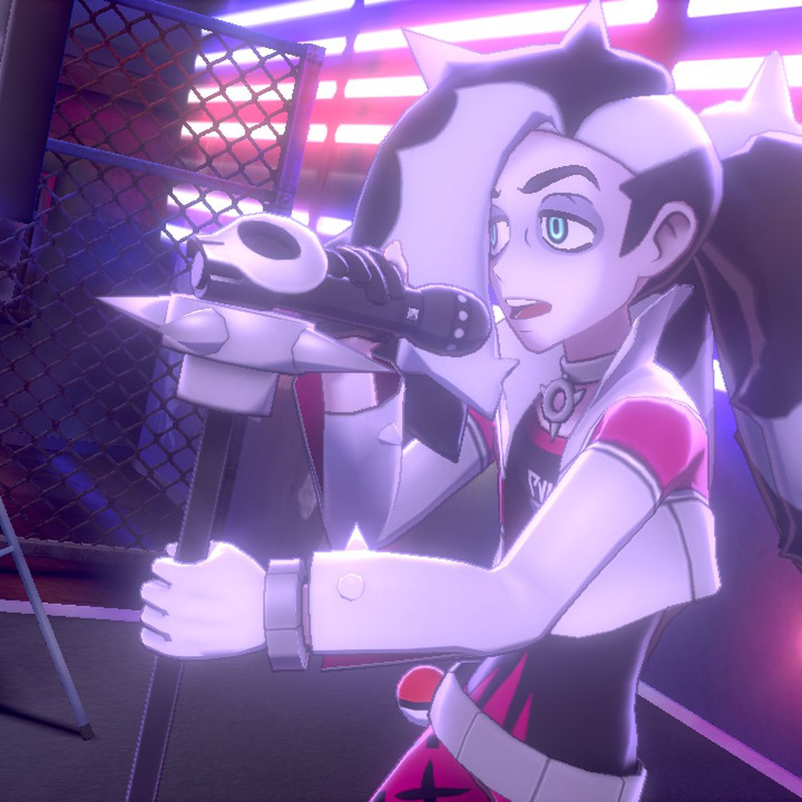
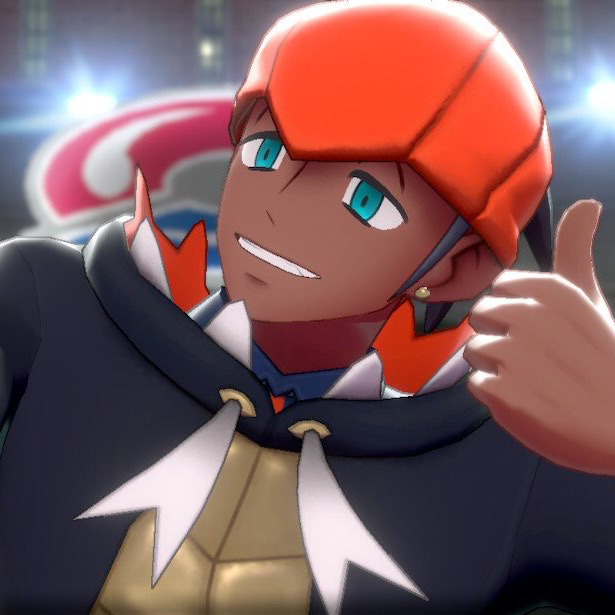

| City/Town | Gym Leader | Type | Description | Levels | How To beat | Examples of Which Pokemon has an Advantage | Bagdes | Turffield |  Milo |
Grass | Milo is the first Gym Leader Galarian Trainers face in their Gym Challenge. He is a farmer that honed his skills working on his farm with his Pokémon, and can be often seen in Turffield trying to wrangle wandering Wooloo with his farm's herding Yamper. | Level 19 to 20 | Challenge him with a Fire-type or Flying-type or even Bug type to have a type advantage. Milo's strongest Pokemon is a Lv. 20 Eldegoss, so raise your party Pokemon to around Lv. 20, and it should be an easy battle for you. | Woobat, psychic- and flying-type. Found in the Galar Mine. Vulpix, fire-type. Found on Route 3 and Wild Area in sunny weather. Rookidee, flying-type. Found on Route 1, 2, and 3. Caterpie, bug-type. Found on Route 1. as examples | Grass Badge | Hulbury |  Nessa |
Water | Nessa is the second Gym Leader Galarian Trainers face in their Gym Challenge. Nessa is Also known to be a very popular Gym Leader and model in fact Many people believe she acts differently depending on her role. She is known to be calm and collected, but her competitive spirit and indomitable will lurk just beneath the surface. | Level 22 to 24 | Nessa, the Gym Leader of Hulbury Gym, uses Water-type Pokemon as well as a mixed Water/Rock-type Pokemon, Drednaw. Having at least one Grass-type move, which are 4x Super Effective against Water/Rock types, will help take out Drednaw easily. you could also use Electric-type attacks as well but for her Drednaw its better to use Grass | a Yamper, Pikachu, Joltik, or Electrike (Route 4) are all great choices for Electric-types for Grass Types since her Drednaw is double-weak to Grass-type attacks, so consider something like Pumpkaboo (Route 4) or Gossifleur (Route 3). | Water Badge | Motostoke |  Kabul |
Fire | Kabu is designated the third Gym Leader Galar Trainers face in their Gym Challenge. Kabu was originally a Trainer from Hoenn who was invited to the Galar League. He is the current Leader of the Motostoke Gym. He lost the Gym position at one point but regained back several years later in glorious fashion. He made several attempts to becoming Champion but could never reach it. | Level 25 | All three of Kabu's Pokemon are weak to Water-type attacks and Rock-type attacks, with his Centiskorch being double-weak to the latter. so the go to is to use water and rock types or at least have one | some pokemon that are good and to evolve is Wooper, Diglett, Tympole,and Magikarp and Rolycoly | Fire Badge | Stow-on-Side | Allister | Ghost | Allister is the fourth Gym Leader Galar Trainers face in their Gym Challenge in Pokémon Shield. This mysterious Trainer became the Gym Leader of Stow-on-Side Gym at a very young age. He is known to be very shy and fearful around people which is why he wears a mask. He never removes his mask in public. | Level 34 to 36 | Allister’s ghost-types are weak against ghost- and dark-type Pokémon, but most of them have double typing, making it a bit harder to pick a compatible weakness for all of them. They all keep their ghost-type weakness, but using ghost-types also makes you susceptible to getting hit with super effective moves. Also remember that normal- and fighting-type moves will not deal any damage to Allister’s Pokémon, but normal-types also won’t receive damage from ghost-type moves. | some examples that are good and to evolve is Drifloon, Duskull, Impidimp,and Sneasel | Ghost Badge | Ballonlea |  Opal |
Fairy | A user of fairy-type Pokémon, Opal is the oldest and longest-tenured Gym Leader in the Galar region—having served the role for seventy years—but feels she has outgrown her position and uses her Gym Mission as a means of finding a successor. | Level 36 to 38 | Fairy-types are weak against steel- and poison-types, but using those won’t work against Weezing and Mawile. Mawile’s fairy-type weaknesses are completely negated by its steel-typing, so just blast it with fire- and ground-type moves to get by. This gym is also fairly clearable just by using your starter Pokémon, if you’re leveled high enough. | some examples that are good and to evolve is Koffing, Meowth, Klink | Fairy Badge | Circhester |  Melony |
Ice | Melony is the sixth Gym Leader Galar Trainers face in their Gym Challenge in Pokémon Shield. She has been the Gym Leader of Circhester since her twenties. She is also the only known Gym Leader to have ever defeated Raihan, who is said to be the strongest Gym Leader in the Galar League. At one point, she wanted her son Gordie to run the Gym as her successor. However, her son wanted to be a Rock-type user instead. This led to a battle that caused the whole town to split, with the two never speaking to each other again. Despite this, Melony somehow became the first member of Gordie's fan club. | Level 40 to 42 | Melony’s team is weak against fighting-, fire-, rock-, and steel-type moves. The only Pokémon here that might give you some trouble is Lapras, since its water-typing might throw your fire-type Pokémon into a world of pain. | some examples that are good and to evolve is Stufful, Tyrogue, Vulpix, and Meowth | Ice Badge | Spikemuth |  Piers |
Dark | Piers is the seventh Gym Leader Galarian Trainers face in their Gym Challenge. He is well known for writing songs and singing as he regularly does so in Spikemuth. More often he tends to reveal his strategy to his opponents, yet he has the strength and skills to win regardless. | Level 44 to 46 | Dark-types are weak against bug-, fairy-, and fighting-types, though some of the dual typing in Piers’ party will counter those. Bug-type will be four times as effective on Malamar, whereas Fairy-type moves won’t do as much damage to Scrafty. Bring a good variety of Pokémon if you want to clear the gym with ease. | some examples that are good and to evolve is Caterpie, Stufful, Tyrogue, and Milcrey | Dark Badge | Hammerlocke |  Raihan |
Dragon | Raihan is the eighth and final Gym Leader of the Galar League, and he is recognized as the strongest Gym Leader in Galar. He is also the self-proclaimed rival of Champion Leon, and despite having a losing streak of 0 to 10 against him, he is the only person who has come close to beating him, having managed to knock out more of Leon's Pokémon than anyone else. He's said to be strong enough to become a Champion if he moved to another region, but has refused to do so out of desire of wanting to defeat Leon. He is often seen taking selfies on his Rotom Phone, a habit he initially picked up to remind him of the pain of defeat, but one which eventually spread to other parts of his lifestyle. | Level 46 to 48 | Weirdly enough, Raihan only uses two dragon-type Pokémon. Raihan’s dragon-types are weak against dragon-, fairy-, and ice-types, with a couple of exceptions. For Gigalith and Sandaconda, you can use water- and grass-types to knock them down. | some examples that are good and to evolve is Milcrey, Axew, Darumaka, and Magikarp | Dragon Badge |
|---|